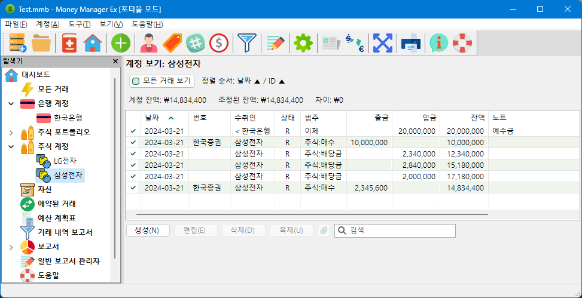

주식과 주라는 용어는 일반적으로 동일한 의미를 갖지만 이러한 용어를 어떻게 사용하느냐에 따라 다른 의미를 가질 수 있습니다. 여기서는 주식을 회사로, 주를 회사 내 가치 단위로 지칭합니다. 일반적으로 우리는 주식 중개인을 통해 주식을 취득하고 회사의 주식을 구매하거나 판매합니다.
주식 초기화는 처음에 두 단계 프로세스로 이루어집니다.
주식 이동과 관련된 모든 후속 거래는 주식 포트폴리오 보기에서 회사를 통해 접근됩니다.
일반 계정과 관련된 모든 거래는 연결된 주식 계정을 사용하는 계정 보기를 통해 수행됩니다.
MMEX에서 주식을 사용하려면 투자 유형의 계정을 만들어야 합니다.
이 계정의 이름은 일반적으로 주식 중개인의 이름입니다. 이 예에서는 한국 증권
이라는 주식 중개인을 선택했습니다.
이 계정은 탐색 트리의 주식 포트폴리오 제목 아래에 표시됩니다. 탐색 트리에서 주식 포트폴리오 분기를 확장하면 새로 생성된 주식 포트폴리오 계정이 표시됩니다.
새 계정 한국 증권
을 선택하면 주식 포트폴리오: 한국 증권 보기가 열립니다. 이제 이 보기에서 우리가 소유한 주식을 추가할 수 있습니다.
주식을 구매한 회사를 주식이라고 부릅니다.
주식 중개인인 한국 증권
에서 두 회사의 주식을 구매한다고 가정하면 회사의 주식 포트폴리오 보기에 새 항목을 생성하게 됩니다.
각 회사의 초기 항목으로 다음을 제공합니다.
서울는 증권 거래소 코드이고,
005930는 현재 주가 정보를 얻기 위한 종목 코드입니다.
이 항목을 저장하면 주식 계정 및 주식 연결을 설정할 수 있습니다.
이후에 이 대화 상자를 사용하면 이 주식의 주가를 업데이트할 수 있습니다. 추가 주식을 구매하면 이 가격이 모든 주식에 영향을 미칩니다.
이제 초기 주식 항목을 생성했으므로 초기 종목을 생성하려면 주식에 거래를 추가해야 합니다. 초기 종목 정보는 새로운 종목 거래로 이전됩니다.
여기서는 일반 거래와 유사한 추가 정보를 추가합니다.
주식 매수 또는 매도는 주식 포트폴리오 보기의 주식 항목에 액세스하고 새 거래를 추가하여 수행됩니다.
여기서는 주식 정보를 추가하고 주식 종목의 거래 섹션을 통해 매수 또는 매도를 제어해야 합니다.
이제 우리 주식 포트폴리오 계정에 우리가 보유한 주식 요약이 표시됩니다.
삼성전자 및 LG전자 회사의 계정은 한국증권에서 관리합니다. 이 보기에서는 의미가 없으므로 다양한 제목을 숨겼습니다.

참고: 최초 주가는 이 보기에 표시되지 않습니다. 일반적으로 매수할 때마다 주가가 다르기 때문에 요약 보기에서는 주가가 의미가 없기 때문입니다.
계정에 주식을 추가하면 거래 보기를 사용하여 관련 주식 거래를 볼 수 있습니다.

주식 계정에는 이 회사 주식과 관련된 거래가 포함되어 있습니다.
처음에 우리는 주식과 주식에 대한 투자를 위해 돈을 따로 마련했습니다. 이는 일반 계좌에서 주식 계좌로 자금을 이체함으로써 달성됩니다.
주식을 구입하고 배당금을 받으면서 시간이 지남에 따라 투자를 추적할 수 있습니다.
거래에서 회사 이름을 수취인으로 사용할 수도 있습니다. 또한 다음과 같은 범주를 만드는 것이 좋습니다.
포트폴리오 보기의 주식 목록:
주식 계정에 접근하면 주식 계정에 일반 거래를 추가할 수 있습니다.